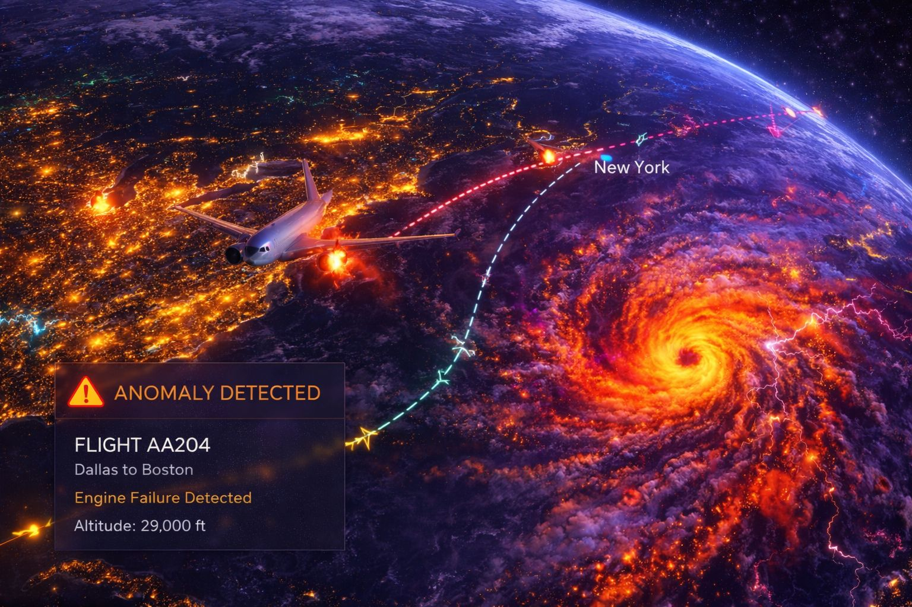
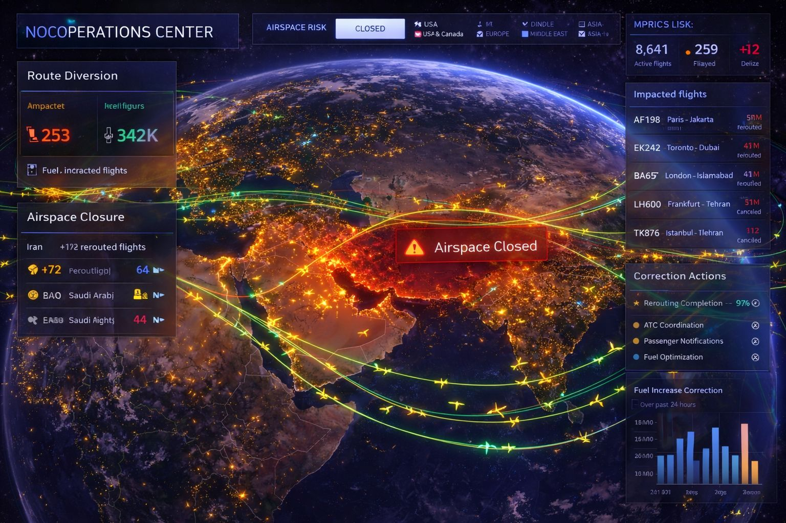
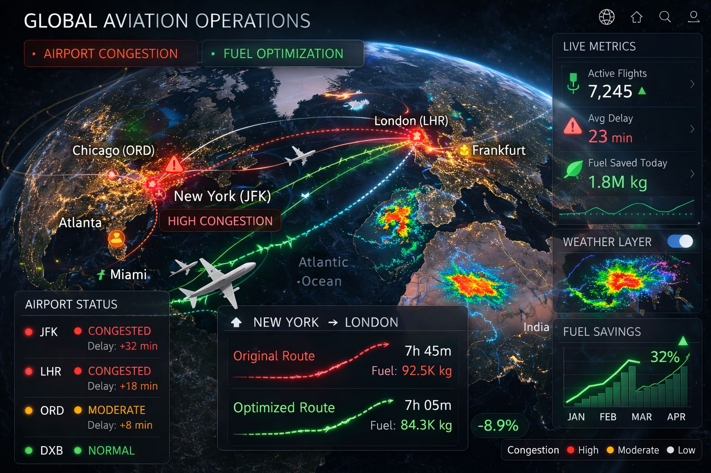

Airplane Live
Live air traffic, airspace corridors, and operational constraints — to support planning, safety, and disruption response.
Track airplanes live on a 3D globe with corridors, airports, and airspace layers that make operations easy to understand. GRIP 3D helps teams visualize flight paths, delays, holding patterns, reroutes, and airspace constraints—then drill into events and supporting data. Add layers like weather cells, NOTAMs, ground handling status, or network coverage to connect the “where” with the “why.”
Aviation teams rely on multiple feeds (radar, flight plans, weather, NOTAMs). Correlating airspace events to operational impact is slow and often manual.
- Flight tracking lacks operational overlays
- Weather disruptions are hard to quantify visually
- Limited replay/forensics for incidents
- Multiple sources with inconsistent identifiers
GRIP 3D layers flight tracks with corridors, constraints, and weather to show disruption hotspots — and supports replay to review incidents and performance.
- Live tracks + corridors + constraints in one view
- Weather + turbulence overlays tied to routes
- Playback to audit decisions and events
- APIs to unify airline/airport ops datasets
Why this works at enterprise scale
Capabilities
- Orbital tracks and pass prediction overlays
- Beam footprint coverage & handover visualization
- Ground station / gateway health with alerts
- Telco layers: sites, sectors, outages, customer-impact
- APIs for partner data ingestion and layer publishing
Platform Views



Open for consulting and partner integrations
If you want this use case mapped to your data sources, we can deliver a fast prototype and integration plan — including layers, APIs, and deployment options.